فصل ششم — الگوهای پیشرفته، دنبالهها و ساختارهای گرافی#
درس دادهکاوی — کارشناسی ارشد مهندسی کامپیوتر
پرسش محوری: اگر بدانیم چند رویداد با هم رخ میدهند، آیا میتوانیم ترتیب رخداد، سطح مفهوم، قید زمانی یا شکل ارتباط میان آنها را نیز کشف کنیم؛ بیآنکه یک الگوی ظاهری را به اشتباه بهصورت قانون جهان واقعی تفسیر کنیم؟
فایلهای آموزشی: PDF فصل ششم · LaTeX و تصاویر در ZIP · کد Python · Notebook · دادهٔ رویدادهای ترتیبی · دادهٔ گرافهای آموزشی. همهٔ دادهها ساختگی هستند و برای اجرا به اینترنت نیاز ندارند.
اهداف یادگیری و مسیر فصل#
انتظار میرود دانشجو پس از مطالعهٔ فصل بتواند: (۱) تفاوت سبد خرید، دنبالهٔ رویداد و گراف را در یک مسئله بیان کند؛ (۲) تعریف دقیق زیردنباله، زیرمجموعهٔ اقلامِ یک رویداد و پشتیبانی در سطح مشتری را بنویسد؛ (۳) یک الگوی ترتیبی را دستی بشمارد؛ (۴) تفاوت GSP، SPADE و PrefixSpan را در سطح سازوکار بفهمد؛ (۵) نقش فاصلهٔ رویدادها و پنجرهٔ زمانی را با مثال محاسبه کند؛ (۶) سطوح مفهوم، قیود، الگوهای نادر و منفی را درست به کار برد؛ (۷) میان همریختی گراف و وجود زیرگراف برچسبدار تمایز بگذارد؛ (۸) پشتیبانی الگو در پایگاه گرافی را بشمارد؛ (۹) از ادعای نادرست دربارهٔ مقیاسپذیری الگوریتم آموزشی پرهیز کند؛ و (۱۰) الگوی کشفشده را از نظر تکرارپذیری، پایداری و خطر تفسیر علّی ارزیابی کند.

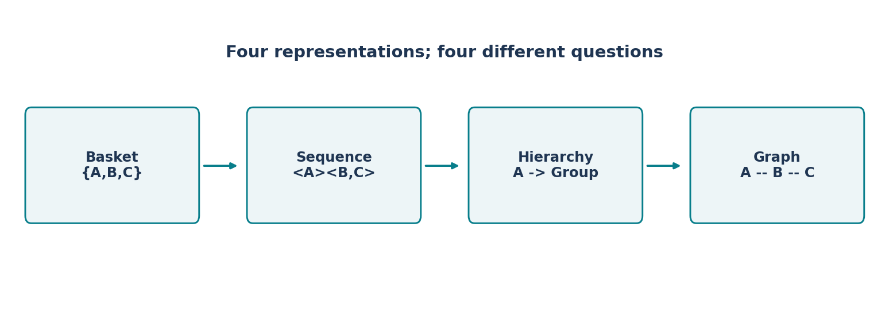
Fig. 75 شکل ۶ـ۱. یک مسئله میتواند چهار بازنمایی متفاوت داشته باشد: سبد، دنباله، سلسلهمراتب مفهوم و گراف. هر بازنمایی نوع متفاوتی از پرسش را پاسخ میدهد.#
مرجع علمی و مرزبندی#
بخش اصلی این فصل بر Han, Pei & Tong، ویرایش چهارم، فصل ۵، صفحات چاپی ۱۷۵ تا ۲۳۵ مبتنی است؛ بهویژه ۵٫۱ (الگوهای چندسطحی و نادر)، ۵٫۳ (قیود)، ۵٫۴ (الگوهای ترتیبی، صفحات ۱۹۸ تا ۲۱۰) و ۵٫۵ (زیرگرافها، صفحات ۲۱۱ تا ۲۲۲). منبع مکمل Tan, Steinbach, Karpatne & Kumar، ویرایش دوم، فصل ۶، صفحات چاپی ۴۵۱ تا ۵۰۸ است؛ بهویژه ۶٫۱ تا ۶٫۳ (ویژگیهای ردهای، پیوسته و سلسلهمراتب)، ۶٫۴ (دنبالهها، صفحات ۴۶۴ به بعد)، ۶٫۵ (زیرگرافها، صفحات ۴۷۹ به بعد) و ۶٫۶ (الگوهای کمفراوان). این بازهها از صفحات چاپی خود کتابها گرفته شدهاند، نه شمارهٔ صفحهٔ PDF.
مرز با فصل پنجم: در فصل پنجم Apriori، FP-Growth، Eclat، پشتیبانی و قواعد انجمنی روی سبدهای بدون ترتیب بررسی شد. اینجا آن مفاهیم را از ابتدا تکرار نمیکنیم، بلکه نشان میدهیم با افزودن زمان، سلسلهمراتب، قیود و ساختار رابطهای چه چیزی در تعریف الگو و شمارش پشتیبانی تغییر میکند. مباحث گرافی این فصل استخراج زیرساختار پرتکرار هستند؛ خوشهبندی شبکهها که هدف متفاوتی دارد به فصلهای خوشهبندی موکول میشود.
۶ـ۱. مسئلهٔ آغازین: چرا دو گزارش یک فروشگاه هر دو درستاند؟#
فرض کنید فروشگاه اینترنتی به ازای هر مشتری چند خرید در روزهای مختلف دارد. گزارش اول میگوید «نان و شیر در هفت مشتری دیده شدهاند». گزارش دوم میگوید «نان پیش از شیر در پنج مشتری دیده شده است». گزارش سوم میگوید «نان و شیر در یک رویداد واحد فقط برای یک مشتری مشاهده شدهاند». اگر واحد مشاهده و معنای «همراهی» را ثبت نکنیم، سه نتیجه ظاهراً متناقضاند.
در دادهٔ آموزشی فصل، هر مشتری دنبالهای از سه رویداد دارد؛ هر رویداد میتواند شامل یک یا چند قلم باشد. برای نمونه:
مشتری |
رویداد اول |
رویداد دوم |
رویداد سوم |
|---|---|---|---|
S1 |
|
|
|
S2 |
|
|
|
S3 |
|
|
|
S4 |
|
|
|
S5 |
|
|
|
S6 |
|
|
|
S7 |
|
|
|
S8 |
|
|
|
همهٔ رکوردها در sequence_events_synthetic.csv ذخیره شدهاند. روز واقعیِ رویداد نیز در فایل وجود دارد. در این مثال bread، milk، coffee و tea صرفاً برچسبهای انگلیسی اقلام ساختگی هستند؛ نام انگلیسی درون فرمولها و شکلها از آشفتگی نوشتار دوجهته جلوگیری میکند.

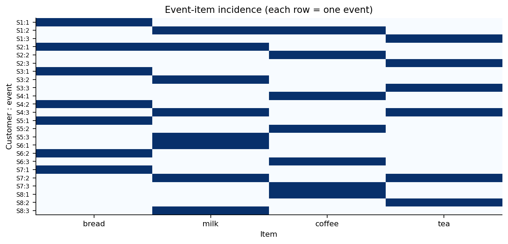
Fig. 76 شکل ۶ـ۲. ماتریس حضور قلم در هر رویداد. هر سطر یک رویداد است، نه یک مشتری؛ برای پشتیبانی باید سطرهای یک مشتری را دوباره تجمیع کنیم.#
پرسش کلیدی این نیست که «کدام عدد بزرگتر است؟»؛ پرسش این است که کدام تعریف از الگو برای تصمیم کسبوکار معنا دارد؟ اگر پیشنهاد کالا قرار است پس از خرید اول صادر شود، ترتیب مهم است. اگر فقط چیدمان قفسه مطرح است، شاید هموقوعی بدون ترتیب کافی باشد. اگر هدف کشف یک زنجیرهٔ رخداد امنیتی است، حتی فاصلهٔ زمانی و نوع رابطه نیز بخشی از تعریف الگو خواهند بود.
۶ـ۲. سه نوع ساختار: مجموعهاقلام، دنباله و گراف#
مجموعهاقلام (Itemset) فقط میگوید کدام اقلام وجود دارند؛ مثلاً یک سبد با bread و milk، ترتیبی میان آنها تعریف نمیکند. دنباله (Sequence) رویدادها را به ترتیب قرار میدهد؛ یک رویداد همچنان میتواند چند قلم همزمان داشته باشد. گراف (Graph) رابطهٔ بین اشیا را ثبت میکند؛ در یک گراف ممکن است دو گره متصل باشند بیآنکه مفهوم «پیش از» تعریف شده باشد.
از نظر نمادگذاری، یک دنباله به شکل زیر است:
در این رابطه، \(I\) مجموعهٔ اقلام ممکن، \(E_i\) مجموعهٔ اقلامِ رویداد شمارهٔ \(i\) و \(m\) تعداد رویدادها است. برای مثال، دو قلم در یک مجموعهٔ رویداد با دو رویداد متوالی یکی نیستند:
یک مشتری میتواند چند قلم را در یک سفارش بخرد و همان مشتری چند سفارش در روزهای مختلف نیز ثبت کند. برای همین، پیش از الگوریتم باید شناسهٔ مشتری، شناسهٔ رویداد، زمان و قاعدهٔ تجمیع را تعریف کنیم. اگر رویدادها از چند دستگاه یا چند منبع جمعآوری شده باشند، تعیین تقدم بر اساس زمان نامعتبر، خطای مستقیمی در الگوهای ترتیبی ایجاد میکند.
۶ـ۳. تعریف دقیق زیردنباله؛ چرا «همزمان» با «بعداً» متفاوت است؟#
دنبالهٔ الگو \(p=\langle P_1,\ldots,P_k\rangle\) در دنبالهٔ مشتری \(s=\langle E_1,\ldots,E_m\rangle\) وجود دارد اگر بتوانیم اندیسهای اکیداً افزایشی پیدا کنیم که در هر گام اقلام الگو، زیرمجموعهٔ اقلام آن رویداد باشند:
رابطهٔ \(j_1<j_2\) مهم است: اگر bread و milk در یک رویداد باشند، الگوی دوگامی «نان سپس شیر» صرفاً بهواسطهٔ همان رویداد برقرار نمیشود. اما الگوی تکرویدادی شامل هر دو قلم برقرار میشود. زمان روز میتواند برابر باشد، ولی تا وقتی رویدادها مستقل و مرتباند، تقدم رویداد را از event_id میگیریم؛ در دادهٔ واقعی این قرارداد باید صریح باشد.
محاسبهٔ دستی: برای الگوی
مشتریان S1، S3، S4، S5 و S7 دارای نان پیش از شیر هستند. S2 هر دو قلم را در اولین رویداد دارد اما رویداد بعدیِ دارای شیر ندارد؛ S6 شیر را پیش از نان دیده است؛ و S8 نانی ندارد. پس شمارش دقیق پنج مشتری است.

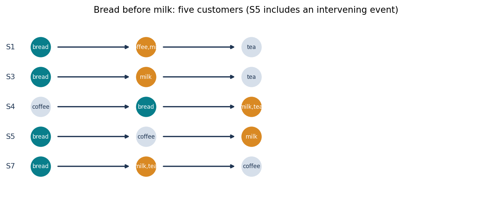
Fig. 77 شکل ۶ـ۳. پنج دنبالهای که نان را پیش از شیر دارند. در S5 یک رویداد میانی وجود دارد؛ بنابراین قید مجاورت میتواند پشتیبانی را تغییر دهد.#
۶ـ۴. پشتیبانی در سطح شیء، نه تعداد تطبیقها#
برای یک پایگاه دنبالهای \(D\) با \(N\) مشتری، تعریف استاندارد پشتیبانی شمارشی برابر تعداد مشتریانی است که الگو در دنبالهشان وجود دارد:
علامت \(p\sqsubseteq s\) یعنی الگو زیردنبالهٔ دنبالهٔ مشتری است. تابع نشانگر برای هر مشتری فقط صفر یا یک میشود؛ اگر یک الگو ده بار در دنبالهٔ همان مشتری دیده شود، در این تعریف پشتیبانی آن مشتری همچنان یک است. برای تحلیل رخدادهای صنعتی ممکن است «تعداد پنجرههای تطبیق» یا «تعداد تکرار در هر ماشین» مناسب باشد، اما آنها معیار متفاوتی هستند و نباید به نام پشتیبانی مشتری گزارش شوند.
در نمونهٔ هشتمشتری ما:
در مقابل، اگر همهٔ رویدادهای هر مشتری را در یک سبد ادغام کنیم، هموقوعی نان و شیر در هفت مشتری دیده میشود. اگر شرط کنیم دو قلم در همان رویداد باشند، فقط S2 شمارش میشود. پس «۷»، «۵» و «۱» هر سه نتیجهٔ معتبر با سه تعریف متفاوت هستند.

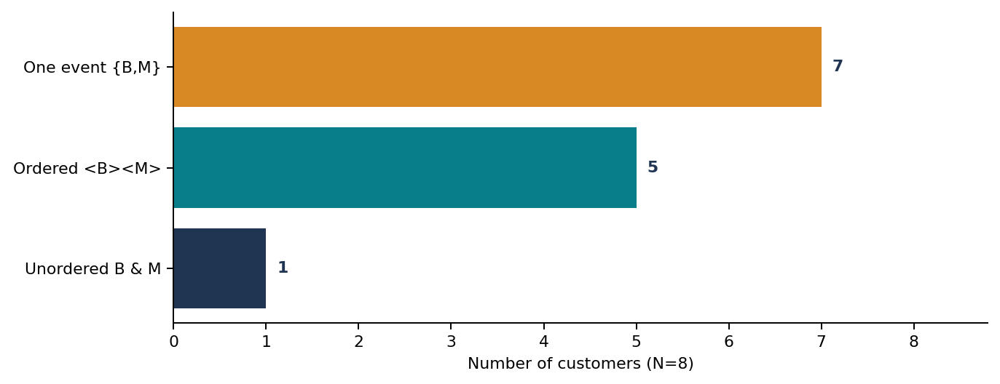
Fig. 78 شکل ۶ـ۴. مقایسهٔ پشتیبانیِ بدون ترتیب، ترتیبی و درون یک رویداد. تغییر بازنمایی و قرارداد رخداد، نتیجه را عوض میکند.#
برای آستانهٔ \(\theta=3\) مشتری، الگوی پنجبار مشاهدهشده پرتکرار است. اگر گزارش بهجای تعداد از درصد استفاده میکند، باید مخرج نیز ثبت شود؛ ۵ مشتری از ۸ با ۵ مشتری از ۸۰۰ یک ادعای آماری یکسان نیست.
۶ـ۵. خاصیت ضدتکسویی و حذف جستوجوی بیفایده#
اگر الگوی \(q\) از \(p\) با افزودن قلم یا رویداد ساخته شود، هیچ دنبالهای نمیتواند \(q\) را داشته باشد ولی \(p\) را نداشته باشد. بنابراین:
این خاصیت ضدتکسویی پشتیبانی (Anti-monotonicity) قلب روشهای مبتنی بر حذف نامزد است. برای مثال در دادهٔ نمونه، پشتیبانی سه الگوی زیر بهترتیب ۷، ۵ و ۱ است:
برای آستانهٔ ۳، الگوی آخر نمیتواند پرتکرار باشد. اگر یک پیشوند خودش زیر آستانه باشد، توسعههای آن را لازم نیست جستوجو کنیم. این استدلال به «پشتیبانی تعریفشده در سطح دنباله و بدون تغییر قرارداد» وابسته است؛ تغییر قید یا عوضکردن مخرج میتواند مقایسه را نامعتبر کند.

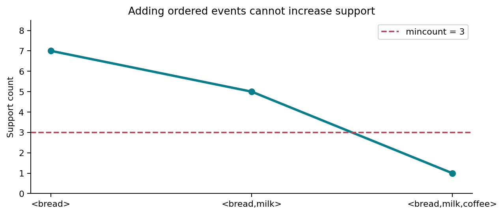
Fig. 79 شکل ۶ـ۵. کاهش یا ثابتماندن پشتیبانی با بلندترشدن الگو؛ خطچین، آستانهٔ شمارشی سه مشتری است.#
۶ـ۶. سه خانوادهٔ الگوریتم؛ کجا نامزد میسازیم و کجا تصویرِ پایگاه را؟#
از فصل پنجم میدانیم که استخراج همهٔ الگوها میتواند نمایی باشد. افزودن ترتیب، تعداد صورتهای ممکن را بیشتر میکند. سه راهبرد کلاسیک برای دنبالهها چنیناند:
خانواده |
ایدهٔ اصلی |
ساختار محاسبه |
نکتهٔ احتیاطی |
|---|---|---|---|
GSP |
تولید دنبالههای نامزد با طول بیشتر، حذف نامزد ناسازگار، شمارش دوباره |
لایهبهلایه |
اسکنهای مکرر و انفجار نامزد |
SPADE |
نمایش عمودی |
محلهای رخداد |
حجم فهرستها و سازگاری قیود |
PrefixSpan |
انتخاب پیشوند و تصویرکردن پسوندهای ممکنِ پایگاه |
جستوجوی پیشوندی |
اندازهٔ پایگاههای تصویری و مدیریت توسعهٔ همرویدادی |
Han این سه خانواده را در بخش ۵٫۴ و Tan خانوادههای استخراج الگوی ترتیبی را در بخش ۶٫۴ توضیح میدهند. این فصل برای فهم دقیق مکانیسم، PrefixSpan با یک قلم در هر گامِ الگو را اجرا میکند و دو روش دیگر را با شبهکد و تفسیر معرفی میکند. ادعای پیادهسازی کامل همهٔ حالتهای GSP، SPADE یا gSpan در کد آموزشی نداریم.
۶ـ۷. GSP به زبان مرحلهای: ساخت نامزد و شمارش#
فرض کنید آستانهٔ پشتیبانی سه مشتری است. ابتدا قلمهای پرتکرارِ تکرویدادی را میشماریم؛ هر چهار قلم نمونه پرتکرارند. سپس از آنها نامزدهای دورویدادی مانند bread → milk و milk → coffee میسازیم. برای هر نامزد، باید روی همهٔ دنبالههای مشتری دنبال رویدادهای مرتب بگردیم. در مرحلهٔ بعد فقط نامزدهایی را میسازیم که زیرالگوهای لازمِ آنها پرتکرار باشند.
شبهکد آموزشی:
L1 = frequent 1-event patterns
for k = 2,3,...:
Ck = join_and_prune(L[k-1])
for each customer sequence s:
count each candidate in Ck at most once for s
Lk = candidates with count >= minimum_count
if Lk is empty: stop
در حالت رویدادهای چندقلمی باید دو نوع توسعه را از هم جدا کرد: افزودن قلم به همان رویداد (I-extension)، و افزودن رویداد جدید (S-extension). اگر این دو را یکی بگیریم، الگوی <{bread,milk}> را اشتباهاً معادل <{bread},{milk}> میگیریم. همین ظرافت علت نیاز به نمایش دقیق دنباله است.
۶ـ۸. PrefixSpan: تصویر پایگاه نسبت به پیشوند#
ایدهٔ PrefixSpan چنین است: بهجای تولید همهٔ نامزدهای جهانی، یک پیشوند را انتخاب و فقط پسوندهای بعد از تطبیق آن پیشوند را نگه میداریم. در این پسوندها، اقلامی که در تعداد کافی از مشتریان ظاهر میشوند، توسعههای مجاز پیشوند هستند.
برای پیشوند <bread>، مشتری S1 از رویداد bread به بعد، پسوند <{milk,coffee},{tea}> دارد؛ مشتری S4 از پس از رخداد دوم، <{milk,tea}> دارد. الگوی <bread><milk> در پنج مشتری وجود دارد، پس شاخهٔ آن را نگه میداریم. وقتی بخواهیم <bread><milk><coffee> را بررسی کنیم، فقط S7 آن را میپذیرد؛ آستانهٔ سه را رد میکند و توسعهٔ بیشتر آن لزومی ندارد.
شبهکد محدودشده به تکقلم در هر گام:
mine(prefix, projected_suffixes):
count items found in each customer's suffix at most once
for each item a with count(a) >= minimum_count:
emit prefix + <a>
new_suffixes = suffix after earliest matched a in each customer
mine(prefix + <a>, new_suffixes)
این نسخه برای بدون قید زمانی و فقط برای توسعهٔ رویداد جدید استفاده میشود. انتخاب زودترین تطبیق پیشوند، در این قرارداد برای وجود یک توسعهٔ بعدی کافی است؛ اما وقتی قید فاصلهٔ زمانی یا قید روی وقوعهای مختلف وجود دارد، نگاهداشتن تنها زودترین وقوع میتواند جواب را از دست بدهد. کد ما برای قیود از جستوجوی بازگشتیِ همهٔ تطبیقهای لازم استفاده میکند، نه از این سادهسازی.

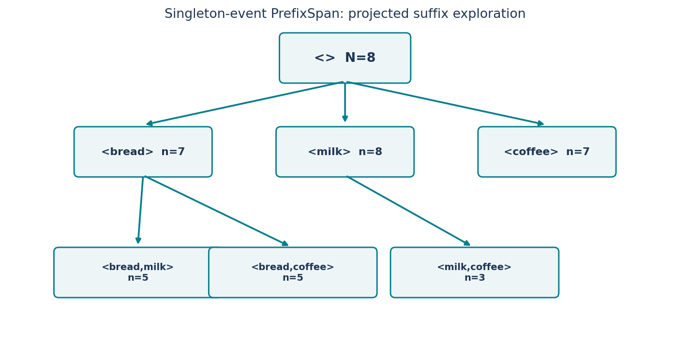
Fig. 80 شکل ۶ـ۶. نمونهٔ درخت توسعهٔ پیشوند در نسخهٔ تکقلمی PrefixSpan. برچسب هر گره تعداد مشتریانِ پشتیبانِ الگوی آن است.#

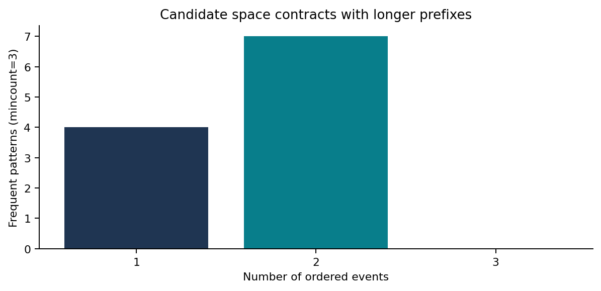
Fig. 81 شکل ۶ـ۷. تعداد الگوهای پرتکرار نسخهٔ تکقلمی در دادهٔ کوچک هشتمشتری با آستانهٔ سه؛ نمودار نشاندهندهٔ نتیجهٔ همین داده است، نه قانون عمومی رشد تعداد الگوها.#
۶ـ۹. SPADE و شناسههای عمودی؛ تشریح بهجای حفظ نام الگوریتم#
در یک پایگاه ترتیبی، میتوان محل وقوع هر قلم را بهجای فهرست مشتریان به شکل زوج (SID,EID) ثبت کرد؛ یعنی «در کدام دنباله و در کدام رویداد». برای bread در مثال ما زوجهایی مانند (S1,1) و (S4,2) داریم؛ برای milk زوجهایی مانند (S1,2) و (S2,1).
برای محاسبهٔ <bread><milk>، باید در هر شناسهٔ مشتری زوجی با رویداد نان کوچکتر از رویداد شیر پیدا کنیم. حضور هر دو قلم در S2 کافی نیست، زیرا تنها رخداد شیر در رویداد اول و همزمان با نان است. نمایش عمودی امکان انجام چنین پیوندهایی را بدون پیمودن مکرر همهٔ رشتههای خام فراهم میکند، اما خودش هزینهٔ حافظه دارد.
محاسبهٔ دستی روی دو مشتری: در S1 اندیسهای نان و شیر بهترتیب ۱ و ۲ هستند؛ زوج مرتب مجاز است. در S2 اندیس هر دو ۱ است؛ شرط اکید ترتیب برقرار نیست. پس S1 یک واحد پشتیبانی میدهد و S2 صفر.
۶ـ۱۰. قیود زمانی: الگوی یکسان، پاسخ متفاوت#
تا اینجا فقط به «ترتیب» توجه کردیم، نه فاصله. در بسیاری از مسئلهها، خرید شیر یک ماه بعد از نان برای پیشنهاد سریع کالا معنادار نیست. یک قید رایج حداکثر فاصلهٔ تعداد رویدادهای میانی است؛ اگر دو رخداد در اندیسهای \(i\) و \(j\) باشند:
پس gap=0 یعنی دو رویداد متوالی؛ gap=1 یعنی یک رویداد میانی وجود دارد. مثال <bread><milk> بدون قید در پنج مشتری است، اما با شرط max_gap=0 در چهار مشتری باقی میماند: S1، S3، S4 و S7. S5 حذف میشود، زیرا رویداد coffee بین آنهاست.
قید دوم حداکثر طول پنجرهٔ زمانی است. اگر \(t_{j_k}\) زمان آخرین رویداد تطبیق و \(t_{j_1}\) زمان اولین رویداد باشد:
برای max_span_days=1 در دادهٔ نمونه، همان الگوی نان سپس شیر تنها برای S3 و S7 رخ میدهد. اگر محدودیت دو روز شود، چهار مشتری در آن جا میگیرند. واحد «روز» و واحد «تعداد رویداد میانی» قابل جایگزینی نیستند.

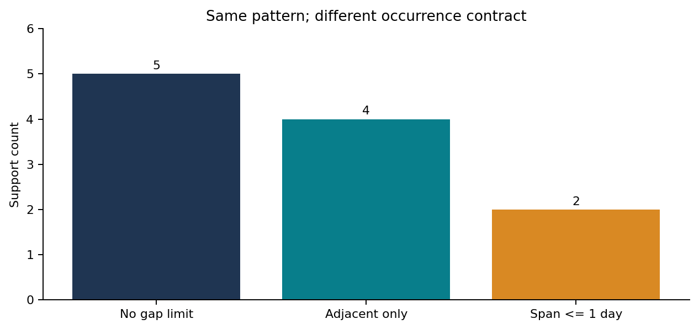
Fig. 82 شکل ۶ـ۸. پشتیبانی یک الگو تحت سه قرارداد وقوع؛ بدون قید، مجاورت رویدادها و پنجرهٔ یکروزه.#
در مثالهای پیچیده ممکن است یک پیشوند چند بار در دنباله رخ دهد؛ برای قیود نباید صرفاً اولین تطبیق را بگیریم. برنامهٔ آموزشی از جستوجوی بازگشتی با امکان بازگشت (Backtracking) استفاده میکند و در آزمونها یک موردِ نیازمند بازگشت را عمداً بررسی کردهایم. این روش برای دادهٔ کوچک صحیح است، اما جایگزین نمایهسازی صنعتی روی میلیونها رویداد نیست.
۶ـ۱۱. پشتیبانی بسته و بیشینه در فضای ترتیبی#
در فصل پنجم تفاوت مجموعهاقلام بسته و بیشینه را یاد گرفتیم. همان ایده اینجا با رابطهٔ زیردنباله تعریف میشود:
الگوی بسته (Closed) الگویی است که هیچ ابرالگوی حقیقی با همان پشتیبانی ندارد.
الگوی بیشینه (Maximal) الگویی است که هیچ ابرالگوی پرتکرار ندارد.
هر الگوی بیشینهٔ پرتکرار، بسته نیز هست؛ اما عکس آن الزاماً برقرار نیست. اگر دو دنباله در تمام مشتریانِ پشتیبان یکسان ظاهر شوند، گزارش هر دو بدون توجه به افزونگی ممکن است صدها خروجی تکراری ایجاد کند. در یک پایگاه بزرگ، الگوهای بسته میتوانند پشتیبانیِ موردنیاز برای تحلیل بعدی را بهتر از الگوهای صرفاً بیشینه حفظ کنند.
محدودیت مهم: «بسته» یا «بیشینه» بودن به آستانهٔ پشتیبانی، تعریف زیردنباله و قیود مجاز وابسته است. یک الگوریتم که فقط الگوهای تکقلمی را میگردد حق ندارد دربارهٔ بستهبودن در کل فضای الگوهای چندقلمی ادعای قطعی کند. مثالهای کد این فصل چنین ادعایی ندارند.
۶ـ۱۲. استخراج الگوهای چندسطحی با سلسلهمراتب مفهوم#
گاهی داده برای هر قلم شناسهٔ بسیار ریز دارد: black_tea, green_tea, espresso, instant_coffee. یک الگوی سطح پایین ممکن است به آستانه نرسد، ولی در سطح مفهوم نوشیدنی پرتکرار باشد. سلسلهمراتب مفهوم (Concept Hierarchy) اجازه میدهد سؤال را در چند سطح بپرسیم، اما خطر افزایش مصنوعی پشتیبانی بهدلیل شمردن چند زیرنوع در یک مشتری وجود دارد.
اگر tea و coffee هر دو به beverage نگاشت شوند، در یک رویداد شامل هر دو قلم باید فقط یک حضور beverage ثبت کنیم. نگاشت باید در سطح رویداد با عملیات مجموعهای انجام شود؛ اگر دو فرزند را جمع کنیم، پشتیبانی بیش از تعداد مشتریان میشود. در برنامهٔ آموزشی تابع taxonomy_projection دقیقاً این تبدیل را انجام میدهد.

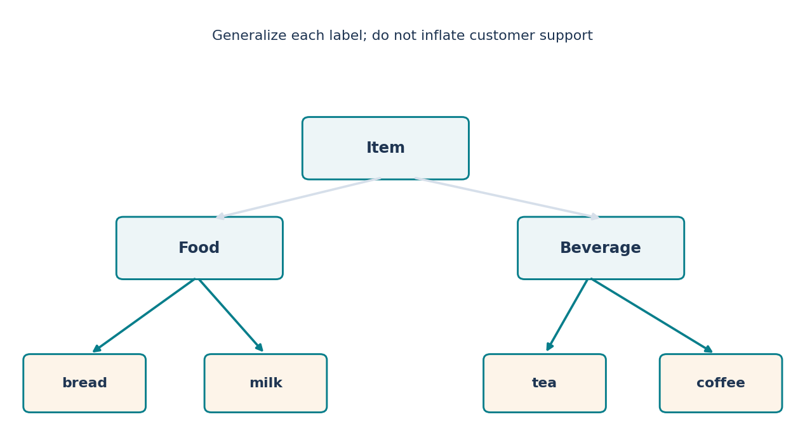
Fig. 83 شکل ۶ـ۹. طرح یک سلسلهمراتب آموزشی: تجمیع زیرنوعها در سطح بالاتر. عنوانهای انگلیسی در شکل صرفاً شناسهٔ مفاهیم هستند.#
مثال عددی: هر هشت مشتری نمونه دستکم یکی از tea یا coffee را دیدهاند؛ پس پشتیبانی مفهوم beverage برابر هشت مشتری است، نه حاصل جمع حضورهای tea و coffee که ممکن است از هشت هم بزرگتر شود. در سطح بالاتر، پشتیبانی الگوهای حاوی والد میتواند از پشتیبانی فرزندان بیشتر باشد؛ بنابراین مقایسهٔ آستانهها باید در همان سطح انجام گیرد.
۶ـ۱۳. قیود پژوهشگر؛ حذف ایمن یا دستکاری نتیجه؟#
وقتی تعداد الگوها بسیار زیاد است، پژوهشگر ناچار است قیودی مانند «شامل قلم حساس باشد»، «قیمت کل از حدی بیشتر باشد»، «طول الگو حداکثر سه رویداد باشد» یا «فقط رخدادهای همین هفته» بگذارد. این قیود ممکن است فضای جستوجو را کاهش دهند، ولی رفتار یکسانی ندارند.
قید ضدتکسو (Anti-monotone): اگر الگویی شرط را نقض کند، همهٔ توسعههایش نیز نقض میکنند. نمونهٔ ساده: حداقل پشتیبانی؛ یا محدودیت «حداکثر تعداد اقلام»، اگر هر توسعه واقعاً تعداد اقلام را زیاد کند.
قید تکسو (Monotone): اگر الگویی شرط را برآورده کند، همهٔ توسعههای مناسب نیز برآورده میکنند. مثال: «مجموع قیمتهای نامنفی اقلام حداقل ۱۰۰ باشد»؛ بعد از عبور از آستانه، افزودن قلم با قیمت نامنفی شرط را خراب نمیکند.
قید مختصر یا قابل اعمال در منبع (Succinct / data constraint): مثلاً فقط اقلام متعلق به دستهٔ خاص یا فقط مشتریان یک منطقه را پیش از شمارش وارد کنیم. این فیلتر ممکن است مخرج و جامعهٔ هدف را تغییر دهد؛ بنابراین نباید نتیجه را به همهٔ مشتریان تعمیم داد.

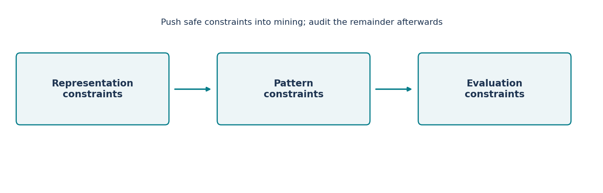
Fig. 84 شکل ۶ـ۱۰. جداسازی قیود بازنمایی، قیود حین جستوجو و ارزیابی نهایی. هر قید لزوماً قابلیت هرس یکسان ندارد.#
بهطور خاص، قیود زمانی همیشه همان خاصیت ضدتکسوییِ پشتیبانی بدون قید را ندارند. مثلاً با حذف یک رویداد میانی، «فاصلهٔ دقیق دو روز» ممکن است از بین برود. بنابراین انتقال بیاحتیاطیِ قانون هرس از حالت بدون قید به مسئلهٔ مقید میتواند الگوی معتبر را حذف کند.
۶ـ۱۴. الگوی نادر، رابطهٔ منفی و خطای «نبودن یعنی نفی»#
پرتکراربودن تنها نشانهٔ جالببودن نیست. وجود یک الگوی بسیار نادر میتواند نشاندهندهٔ نقص امنیتی یا رفتار پرهزینه باشد؛ در مقابل، یک الگوی نادر میتواند صرفاً حاصل کوچکبودن نمونه باشد. برای ارزیابی رابطهٔ منفی، باید نرخهای پایه را در نظر بگیریم.
برای دو رخداد دودویی \(A\) و \(B\) در یک جامعهٔ مشخص، تحت فرض استقلال، انتظار شمارش هموقوعی چنین است:
اگر \(N=8\)، تعداد مشاهدهٔ \(A\) چهار، تعداد مشاهدهٔ \(B\) پنج، و هموقوعی واقعی یک باشد، انتظار استقلال برابر \(4\times5/8=2.5\) است. مشاهدهٔ یک، کمتر از انتظار است؛ اما با این نمونهٔ کوچک نمیتوان فوراً ادعای رابطهٔ پایدار و معنادار کرد.

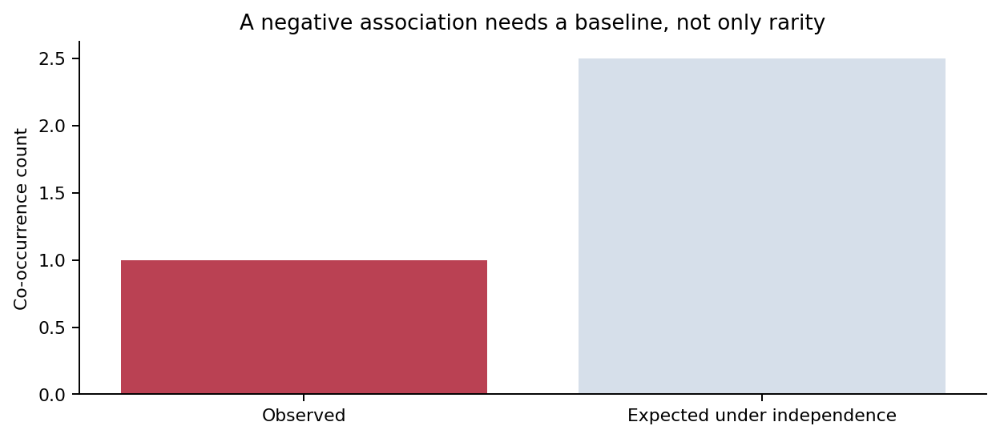
Fig. 85 شکل ۶ـ۱۱. شمارش مشاهدهشده در برابر مقدار مورد انتظارِ استقلال برای یک مثال کاملاً ساختگی؛ مقایسهٔ ساده جایگزین آزمون اعتبار نیست.#
تمایز مهم: «الگوی کمفراوان» و «قاعدهٔ منفی» یکی نیستند. گاهی not A یعنی مشتری اساساً در دورهٔ مشاهده \(A\) را نخریده، اما شاید بهدلیل نبود ثبت، عرضهنشدن کالا یا دورهٔ کوتاه مشاهده باشد. بنابراین تعریف جهان مشاهده، مخرج، پنجره و دادهٔ گمشده برای ادعای منفی حیاتی است. بخش ۶٫۶ کتاب Tan نیز این انواع را از هم متمایز میکند.
۶ـ۱۵. گراف: وقتی رابطه دیگر فقط «بعد از» نیست#
در دادهٔ شبکهای، مدل پایه یک گراف است:
که \(V\) مجموعهٔ گرهها، \(E\) مجموعهٔ یالها، و \(\lambda_V\) و \(\lambda_E\) برچسبهای گره و یال هستند. در مثال اصلی این فصل، یالها بدون جهت هستند و تنها برچسب گرهها اهمیت دارد؛ در مسئلهٔ واقعی ممکن است یال جهتدار، وزندار یا دارای نوع باشد.
هر گراف در graphs_synthetic.json یک تراکنش مستقل است؛ یعنی گراف یک سامانهٔ کوچک، نه کل شبکهٔ مشتریان. شش گراف کوچک با شناسهٔ G1 تا G6 ساختهایم. این انتخاب مدل برای پرسش «کدام ساختار در چند سامانهٔ مستقل تکرار شده است؟» مناسب است. اگر فقط یک شبکهٔ عظیم داشته باشیم و بخواهیم تعداد وقوع زیرساختار در آن را بشماریم، تعریف مسئله و پشتیبانی تغییر میکند.

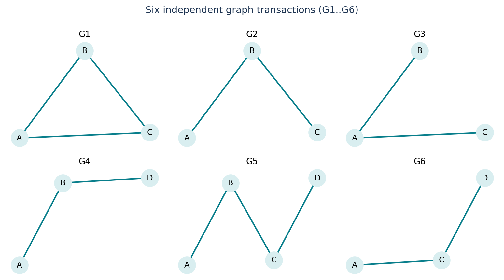
Fig. 86 شکل ۶ـ۱۲. شش گراف مستقلِ ساختگی با برچسب گرههای A، B، C و D. نام گرهها در هر گراف محلی است.#
۶ـ۱۶. همریختی و زیرگراف؛ چرا شکل ترسیمی ملاک نیست؟#
دو گراف میتوانند با نام گرههای متفاوت دقیقاً یک ساختار داشته باشند. همریختی گراف (Graph Isomorphism) وجود یک تناظر یکبهیک میان گرهها را میخواهد که برچسبها و رابطهٔ یالها را حفظ کند. اما در انطباق زیرگراف (Subgraph Isomorphism) لازم است گراف الگو فقط روی بخشی از گراف بزرگتر با این ویژگیها جاسازی شود.
برای یک الگوی برچسبدار کوچک، میپرسیم آیا نگاشتِ یکبهیکِ گرههای الگو به گرههای میزبان وجود دارد، بهگونهای که هر یال الزامیِ الگو در میزبان نیز موجود باشد؟ در قرارداد غیرالقایی (Non-induced) ممکن است میزبان یالهای اضافی داشته باشد؛ این یالهای اضافی تطبیق را خراب نمیکنند. در قرارداد القایی (Induced)، نبودن یالِ اضافی هم شرط است و نتیجه میتواند متفاوت باشد.

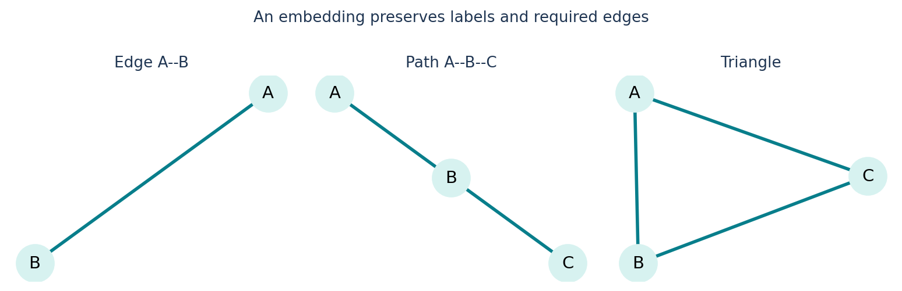
Fig. 87 شکل ۶ـ۱۳. سه الگوی گرافی: یال، مسیر دویالی و مثلث. مسیر دویالی در گراف مثلثی بهصورت غیرالقایی نیز وجود دارد.#
مثال دستی: در G1 یالهای A-B، B-C و A-C وجود دارند. بنابراین الگوی مسیر A-B-C در آن دیده میشود، حتی اگر گراف میزبان یال اضافی A-C داشته باشد. اما اگر مسیر القایی میخواستیم، وجود همین یال اضافه مانع تطبیق سهگرهیِ مزبور میشد. در G2 که فقط دو یال متوالی دارد، مسیر به هر دو معنا وجود دارد.
۶ـ۱۷. پشتیبانی گرافی را چطور میشماریم؟#
در پایگاه گرافی \(D_G=\{G_1,\ldots,G_N\}\)، تعریف متداول پشتیبانی تعداد گرافهای شامل الگو است:
نماد \(H\hookrightarrow G_i\) یعنی الگوی \(H\) در گراف \(G_i\) با قرارداد اعلامشده قابل جاسازی است. اگر همان الگوی مسیر در یک گراف بزرگ ده بار تکرار شود، در این تعریف آن گراف فقط یک بار شمرده میشود. این تمایز با «تعداد embeddingها در یک گراف» همانقدر مهم است که تمایز مشتری و تعداد وقوع در مسئلهٔ ترتیبی.
در شش گراف نمونه، شمارش دستی به صورت زیر است:
الگوی برچسبدار |
گرافهای حاوی آن |
پشتیبانی شمارشی |
|---|---|---|
یال |
|
۵ |
مسیر |
|
۳ |
مثلث |
|
۱ |
با آستانهٔ سه، یال و مسیر پرتکرار و مثلث غیرپرتکرار هستند. این کاهش پشتیبانی با خاصیت ضدتکسویی سازگار است؛ ولی در فضای گرافی، تولید نامزد و بررسی همریختی زیرگراف بهمراتب سنگینتر از جمعزدن مجموعههای کوچک است.

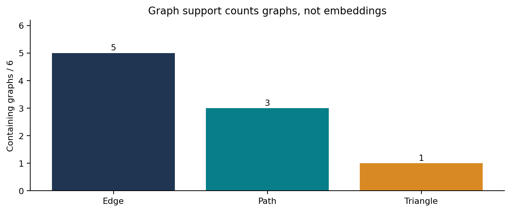
Fig. 88 شکل ۶ـ۱۴. پشتیبانی سه الگوی گرافی با تعریف «تعداد گراف میزبان»؛ تعداد وقوعهای داخلی در هر گراف جمع نشده است.#
۶ـ۱۸. استخراج زیرگراف پرتکرار: FSG و gSpan در سطح مفهوم#
در FSG بهطور کلی الگوهای کوچکتر ساخته میشوند، از آنها نامزدهای بزرگتر تولید میشود و پشتیبانی نامزدها با انطباق زیرگراف محاسبه میگردد. مشکل اصلی برخلاف Apriori روی مجموعهاقلام این است که «یک گراف» میتواند با چند نامگذاری و چند ترتیب توسعه، به یک نامزد یکسان اشاره کند. حذف ساختارهای همریختِ تکراری ضروری است.
روش gSpan بهجای نگهداشتن همهٔ نامزدهای همریخت، از کدگذاری مرتبِ جستوجوی عمقاول (DFS Code) و مفهوم کد کمینه استفاده میکند تا یک ساختار را بهطور کانونی نمایندگی کند و با توسعهٔ یال از آن پیش برود. بنابراین «مشکلِ واحدسازی نمایش گرافها» بخش اصلی الگوریتم است، نه صرفاً شمارش چند یال.
شبهکد مفهومی gSpan، نه پیادهسازی صنعتی:
for every frequent one-edge labeled pattern:
grow(pattern):
if current DFS code is not canonical: return
report pattern
enumerate valid rightmost-edge extensions
keep extensions occurring in enough independent graphs
recursively grow each surviving extension
کد فصل برای شش گراف کوچک از تطبیق دقیق با جستوجوی بازگشتی روی نگاشت گرهها استفاده میکند و بهدرستی نتیجهٔ مثال را به دست میدهد. این کد gSpan نیست و پیچیدگی آن برای گرافهای بزرگ مناسب نیست. برای کار پژوهشی لازم است انتخاب پیادهسازی، زمان اجرا و حافظه را بر دادهٔ واقعی و زیرساخت موجود سنجید.
۶ـ۱۹. آیا میتوان دنباله را به گراف تبدیل کرد؟ بله؛ اما با بهای اطلاعاتی#
برای هر دنبالهٔ رویداد میتوان گراف انتقال ساخت؛ مثلاً از وقوع A سپس B یال جهتدار A→B ساخت. اما وقتی از چند دنباله یالها را در یک گراف کلی تجمیع کنیم، ممکن است مسیری در گراف حاصل وجود داشته باشد که هیچ مشتری آن دنبالهٔ کامل را تجربه نکرده است.
یک مثال ساده: مشتری اول A→B را تجربه کرده و مشتری دوم B→C را؛ گراف تجمیعی مسیر A→B→C دارد، اما ممکن است هیچ مشتریِ واحدی این مسیر را نرفته باشد. همچنین تبدیل یال جهتدار به بدون جهت، ترتیب را از دست میدهد. پس مسیر گرافی معادل الگوی ترتیبی مشتریمحور نیست، مگر آنکه تعریف خاصی از واحد مسیر و ردپای مشتری نگهداری شده باشد.

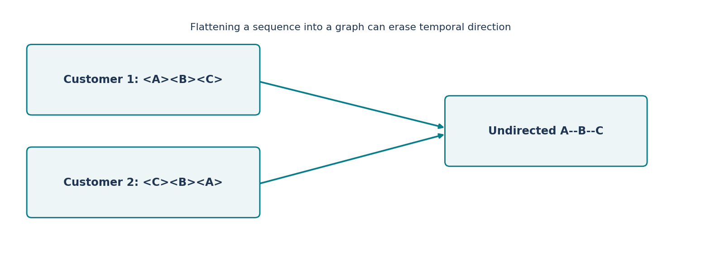
Fig. 89 شکل ۶ـ۱۵. دو دنبالهٔ متفاوت میتوانند پس از حذف جهت، به بازنمایی گرافی یکسان یا مشابه برسند؛ تبدیل بازنمایی لزوماً برگشتپذیر نیست.#
۶ـ۲۰. ارزیابی الگوهای کشفشده: از فراوانی تا تصمیم قابل دفاع#
یک الگوی پرتکرار لزوماً کاربردی، پایدار یا علّی نیست. حداقل پنج سؤال باید برای خروجی ثبت کنیم: واحد شمارش چیست؟ (مشتری، رویداد، گراف مستقل، یا embedding)، مخرج کدام است؟، دورهٔ مشاهده چیست؟، آیا انتخاب آستانه بر همان داده انجام شده است؟، و آیا الگو در دوره یا گروهی مستقل تکرار میشود؟
برای قواعد انجمنی پیشرفته نیز همچنان باید نرخ پایه، اندازهٔ نمونه، فراوانی انتظاری و مقایسه با حالت استقلال را بررسی کنیم. اگر صدها هزار الگو جستوجو و تنها پنج مورد با کوچکترین مقدار \(p\) گزارش شوند، آزمون سادهٔ تکفرضیه کافی نیست. روشهایی مانند کنترل نرخ کشف کاذب (FDR) در جای مناسب قابل استفادهاند، اما فرضهای آنها و وابستگی میان الگوها باید رعایت شود. فصل یازدهم این درس به اعتبار آماری کشفیات با عمق بیشتر میپردازد.

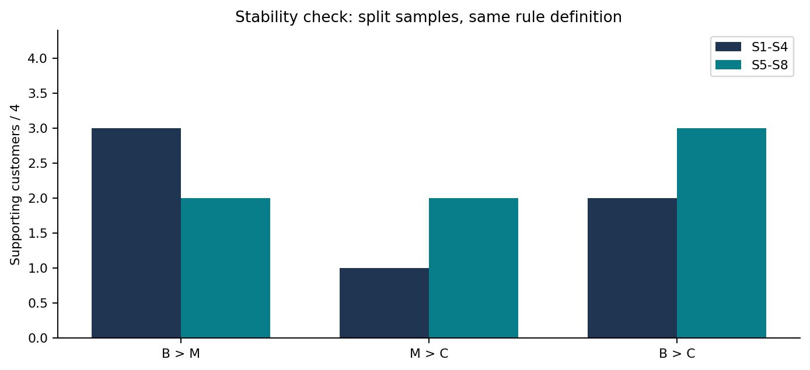
Fig. 90 شکل ۶ـ۱۶. پشتیبانی سه الگوی ترتیبی در دو گروه چهارمشتریِ جداگانه. اختلاف شمارش در دادهٔ کوچک یادآور ضرورت ارزیابی پایداری روی دادهٔ مستقل است، نه تأیید قطعی یک الگو.#
اقدام حداقلی کاربردی: داده را به دورههای زمانی بدون همپوشانی تقسیم کنید، الگوها و آستانهها را روی دورهٔ اول انتخاب کنید، سپس فقط پایداری الگوهای منتخب را روی دورهٔ بعد بسنجید. این کار علیت را اثبات نمیکند؛ فقط خطر گزارش الگوهای تصادفی را کاهش میدهد. در دادهٔ کوچک هشتمشتری این فصل، نتیجهها صرفاً آموزشیاند و هیچ ادعای تعمیم به فروشگاه واقعی ندارند.
۶ـ۲۱. کد و بازتولید: مرز توانایی هر پیادهسازی#
فایل chapter06_examples.py فقط به کتابخانهٔ استاندارد Python نیاز دارد و این کارها را انجام میدهد: خواندن دادهٔ رویدادی و حفظ ترتیب مشتری، شمارش الگوی تکرویدادی یا چندرویدادی با رویدادهای چندقلمی، اعمال قید فاصلهٔ رویدادها و طول پنجرهٔ روزانه، اجرای PrefixSpan فقط با S-extension تکقلمی، فرافکنی سلسلهمراتب و انطباق دقیق زیرگراف برچسبدار غیرالقایی برای نمونههای کوچک.
برای اجرای مستقیم پس از استخراج دانلودها:
python chapter06_examples.py --min-count 3 --max-len 3
python -m unittest -v test_chapter06_examples.py
تابع prefixspan_singletons با یک شمارش مستقلِ کامل روی تمام رشتههای تکقلمی تا طول سه مقایسه میشود و در آزمون خودکار نتایج آنها یکی است. تابع seq_support از ابتدا با پیمایش بازگشتی برای الگوهای چندقلمی و قیود زمانی نوشته شده است. در مورد گرافها، graph_has_subgraph هم برچسب گره و هم وجود تمام یالهای الگو را کنترل میکند، اما برای دادههای بزرگ از نظر زمانی نمایی است.
Notebook همراه فایلها اجرا و نتیجهٔ اصلی در example_results.json ثبت شده است. برنامهٔ generate_figures_optional.py شکلهای اصلی را بازتولید میکند و نیازمند matplotlib، numpy و networkx است؛ برای اجرای کد محاسباتی اصلی نصب این کتابخانهها ضروری نیست.
۶ـ۲۲. سه خطای رایج در پروژههای واقعی#
خطای اول: تغییر بیسروصدای واحد شمارش. اگر تعداد وقوعهای یک الگو را با تعداد مشتریان مقایسه کنیم، خطایی شبیه این است که فروش ده قلم را با ده خریدار یکسان بگیریم. در گزارش پژوهشی، «فرکانس وقوع» و «پشتیبانی شیء» باید دو ستون جدا باشند.
خطای دوم: فراموشکردن وضعیتهای همزمان و دادهٔ ناقص. رخدادهای همزمان صرفاً از روی نام فایل یا ترتیب ورود به پایگاهداده به رویدادهای متوالی تبدیل نمیشوند. زمانبندی ناقص، مناطق زمانی ناسازگار و تکرار شناسهٔ رویداد میتوانند ترتیب مصنوعی بسازند.
خطای سوم: انتخاب الگوریتم بهجای تعریف درست مسئله. حتی بهترین پیادهسازی gSpan اگر رابطهٔ گرافی اشتباه تعریف شده باشد، پاسخی دقیق به سؤال نادرست تولید میکند. همچنین الگوریتم سریع روی زیرنمونهای که الگوهای نادر را حذف کرده است، تضمینی برای اعتبار نتیجهٔ پژوهشی نیست.
۶ـ۲۳. تمرینها و پروژهٔ پایان فصل#
تمرینهای مفهومی و تحلیلی
روی دادهٔ هشتمشتری، تفاوت سه قرارداد «در سبد»، «در یک رویداد» و «بهترتیب رویداد» را برای
breadوmilkتوضیح دهید.چرا وجود دو قلم در یک رویداد برای الگوی دورویدادی کافی نیست؟ یک مثال جدید بنویسید.
تعریف زیردنباله با رویدادهای چندقلمی را بنویسید و نقش «اندیسهای اکیداً افزایشی» را نشان دهید.
ثابت کنید با افزودن یک رویداد به الگو، پشتیبانی مشتریمحور بدون قید افزایش نمییابد.
تفاوت I-extension و S-extension را با دو مثال شرح دهید.
چرا PrefixSpan محدودِ تکقلمی نباید بهعنوان الگوریتم کامل چندقلمی معرفی شود؟
توضیح دهید که «زودترین تطبیق» در کدام حالت آموزشی امن است و چگونه یک قید زمانی میتواند آن را نامعتبر کند.
برای دادهای که در آن چند رخداد در یک روز ثبت شده است، چه قراردادی برای ترتیب پیشنهاد میکنید؟
تفاوت مشتری، رویداد، پنجرهٔ زمانی و گراف مستقل را بهعنوان واحد پشتیبانی بیان کنید.
چرا یک زیرگراف مسیر میتواند در مثلثِ غیرالقایی وجود داشته باشد اما در تعریف القایی وجود نداشته باشد؟
تمرینهای محاسباتی
پشتیبانی
<milk><coffee>و<coffee><milk>را دستی محاسبه کنید و از اختلاف جهت نتیجه بگیرید.پشتیبانی
<bread><milk><coffee>را محاسبه کنید. برای آستانهٔ سه، چه هرسهایی مجازند؟تعداد مشتریان دارای
<bread><milk>را تحتmax_gap=0وmax_span_days=1جداگانه بهدست آورید.برای یک پایگاه ۱۰ مشتری با شمارشهای \(n_A=6\) و \(n_B=5\)، انتظار هموقوعی تحت استقلال را به دست آورید.
در شش گراف نمونه، یال
A-Cرا بشمارید و نتیجه را با مسیرA-B-Cمقایسه کنید.برای الگوی یال
B-Dپشتیبانی گرافی را بیابید و توضیح دهید آیا پرتکرار است یا خیر.اگر در
G1نام گرهها را عوض کنیم ولی برچسبها و یالها ثابت بمانند، نتیجهٔ شمارش چه میشود؟یک مثال بسازید که در آن ادغام چند زیرنوع به یک والد موجب شمارش دوبارهٔ اشتباه شود.
تمرینهای برنامهنویسی و پژوهشی
با تغییر آستانهٔ
min_countاز سه به دو، تعداد الگوهای تکقلمی PrefixSpan را مقایسه کنید.یک سناریوی مصنوعی بسازید که الگوریتم مبتنی بر تطبیق حریصانه تحت
max_gapبه جواب غلط برسد؛ آن را باsubsequence_matchمقایسه کنید.برای هر الگوی پرتکرار، تعداد مشتریان پشتیبان را در دو نیمهٔ مستقل داده گزارش کنید و دربارهٔ ناپایداریِ نمونهٔ کوچک بحث کنید.
یک قید «حداقل/حداکثر زمان روزانه» اضافه کنید، ولی پیش از برنامهنویسی معنای قید و نحوهٔ برخورد با چند تطبیق را بنویسید.
در پایگاه گرافی، یک برچسب تکراری به دو گره یک گراف بدهید و نشان دهید چرا نگاشت یکبهیک ضرورت دارد.
شمارش الگوی مسیر را در حالت القایی پیادهسازی کنید و اختلاف آن را با حالت غیرالقایی گزارش دهید.
با یک نمونهٔ جدید نشان دهید یک مسیر در گراف تجمیعی ممکن است به هیچ دنبالهٔ واقعی تعلق نداشته باشد.
یک طرح ارزیابی زمانی برای کشف زنجیرهٔ رخداد امنیتی بنویسید: واحد مشاهده، قرارداد زمان، قید فاصله، آستانه و آزمون پایداری را روشن کنید.
۶ـ۲۴. جمعبندی و پیوند با فصل هفتم#
فصل پنجم از «چه اقلامی همراه دیده میشوند؟» آغاز کرد. فصل ششم نشان داد که ترتیب، فاصله، سطح مفهوم و ساختار گرافی موضوع را تغییر میدهند؛ بنابراین تنها افزایش پیچیدگی الگوریتم نیست، بلکه تعریف خود الگو عوض میشود. چهار اصل عملی را به خاطر بسپارید: واحد پشتیبانی را مشخص کنید؛ قرارداد وقوع و قید را پیش از شمارش بنویسید؛ همریختی و افزونگی را در گراف جدی بگیرید؛ و نتایج را روی دوره یا گروه مستقل ارزیابی کنید.
در فصل هفتم به سراغ «طبقهبندی، تصمیم و ارزیابی» میرویم. تفاوت کلیدی این است که اینجا ساختارها را بدون هدف پیشبینی برچسب استخراج میکردیم؛ در فصل بعد یک برچسب پاسخ، معیار خطا و پروتکل ارزیابی بیرونازنمونه تعریف خواهد شد. هر دو در دادهکاوی کاربرد دارند، ولی پاسخ یک سؤال نیستند.
منابع#
Han, J., Pei, J., & Tong, H. (2022/2023). Data Mining: Concepts and Techniques, 4th ed., Morgan Kaufmann/Elsevier. Chapter 5, Sections 5.1–5.5, printed pp. 175–222; Chapter 5 overall printed pp. 175–235. See especially sequential patterns (5.4) and subgraph mining (5.5).
Tan, P.-N., Steinbach, M., Karpatne, A., & Kumar, V. (2019). Introduction to Data Mining, 2nd ed., Pearson. Chapter 6, Sections 6.1–6.6, printed pp. 451–501. See especially sequential patterns (6.4), subgraph patterns (6.5), and infrequent patterns (6.6).
شکلها، جدولهای مثال و دادههای این فصل تألیفی و ساختگی هستند؛ هیچ تصویر کتاب مرجع بازنشر نشده است. برای محدودیتهای برنامهٔ آموزشی و بازتولید محاسبات، فایل
README_FA.mdدر پوشهٔ دانلود را ببینید.